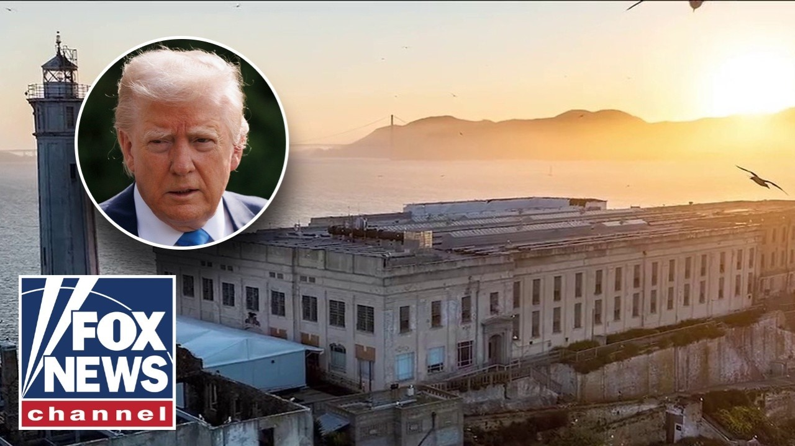

来B站一起耍【Global每日英语简报】
【特朗普计划重开恶魔岛以关押“最凶残暴力罪犯”】
Summary: President Trump plans to reopen Alcatraz to imprison America's most dangerous criminals, citing frustration with judicial obstacles to his immigration agenda.
摘要： 特朗普总统计划重开恶魔岛关押美国最危险罪犯，称此举源于对司法阻碍其移民议程的不满。

⏱️ Estimated Reading Time: 6 min
Well, President Trump says he wants to reopen the notorious Alcatraz prison off the coast of California to house America's worst of the worst.
特朗普总统表示希望重开加州海岸臭名昭著的恶魔岛监狱，关押美国最凶恶的罪犯。
Maline Rivera is live in Washington with the details.
马琳·里维拉正在华盛顿为您带来详细报道。
Good morning, Maddie.
早上好，麦迪。
Good morning, guys.
大家早上好。
The president says he wants to reopen Alcatraz because he's frustrated with judges who have placed roadblocks on parts of his agenda, especially on immigration.
总统称想重开恶魔岛是因为对阻挠其议程（特别是移民政策）的法官感到失望。
The president saying on Truth Social, "For too long, America has been plagued by vicious, violent, and repeat criminal offenders, the dregs of society who will never contribute anything other than misery and suffering.
总统在Truth Social发文："长久以来，美国饱受凶残、暴力及惯犯的困扰，这些社会渣滓只会制造痛苦。"
That is why today I am directing the Bureau of Prisons together with the Department of Justice, FBI, and Homeland Security to reopen a substantially enlarged and rebuilt Alcatraz to house America's most ruthless and violent offenders."
为此我已指示监狱局联合司法部、FBI和国土安全部重建扩建恶魔岛，关押全美最凶残的暴力罪犯。"
The president was pressed about this when he got back to the White House last night.
昨晚返回白宫时总统被追问此事。
Here's what he said.
他是这样回应的。
Just an idea I've had.
这只是我的一个想法。
And I guess because the judges, so many of these radicalized judges, uh, they want to have trials for every single, think of it.
因为这些激进的法官坚持要为每个非法入境者都举行审判。
Every single person that's in our country illegally, they came in illegally.
想想看，每个非法入境者都要审判。
That would mean millions of trials.
这意味着数百万场审判。
And it's just so ridiculous what's happening.
现在的情况太荒谬了。
And it's long been a symbol, Alcatraz.
恶魔岛一直是个象征。
It's a symbol of law and order.
它是法律与秩序的象征。
Alcatraz was used as a maximum security federal prison for nearly 30 years.
恶魔岛作为联邦最高安全级别监狱运行了近30年。
It housed several well-known criminals including Alapone and George Machine Gun Kelly.
这里曾关押过阿尔·卡彭、"机关枪"凯利等著名罪犯。
The prison was closed in 1963 because it became too expensive to operate.
1963年因运营成本过高关闭。
Now it's a popular tourist destination with more than 1 million visitors per year.
如今这里是年游客超百万的热门景点。
Former House Speaker Nancy Pelosi calls the president's proposal not a serious one.
前众议院议长佩洛西称该提案不严肃。
But is it even possible for Alcatra to lose its designation as a historical landmark?
但恶魔岛可能被取消历史地标地位吗？
Per the National Park Services website, a property's historical designation can be considered for withdrawal at the request of the owner or the interior secretary provided some criteria are met.
国家公园管理局网站显示，在满足条件时，可应业主或内政部长请求撤销历史地标认定。
Lawrence Anley and Brian.
劳伦斯·安利与布莱恩报道。
All right.
好的。
Thank you so much, Maddie.
非常感谢，麦迪。
Thanks, man.
谢了兄弟。
Uh he was talking about prices going down.
他刚才谈到物价下降。
He said grocery prices are down.
他说食品价格下降了。
Prices are down for oil.
油价下跌了。
Energy prices are down for gas prices.
能源价格下跌了。
gasoline is a thousand times more important than a stroller because Kristen Welker said, "Well, stroller prices are down."
汽油比婴儿车重要千倍——当克里斯汀·韦尔克说"婴儿车降价了"时。
He's like basically saying, "Are you crazy you're focused on that and not the big picture of prices going down?"
他相当于在说："你疯了吗？不关注整体物价下跌却在意这个？"
I kind of feel that way about the ala u him talking about reopening Alcatraz.
我对重开恶魔岛的讨论也有同感。
Obviously, you can't reopen.
显然无法真正重开。
It's a museum and all that, but I do think he's highlighting the bigger picture, which is we got criminals roaming the street, Americans and non-Americans.
那里已是博物馆，但他指出了关键问题：美国街头游荡着本国与外籍罪犯。
when he said that he was considering deporting or housing uh Americans, he wanted the Department of Justice to look at it is to see if we can send them to Venezuela.
当他考虑驱逐或关押美国人时，曾让司法部研究能否将其遣送委内瑞拉。
They complained about that and now he's saying that he wants to reopen a prison or potentially build a new prison and they don't like that as well.
当时遭反对，如今提出重开或新建监狱同样不受欢迎。
But I think it's the spirit of the conversation.
但这体现了讨论的核心精神。
It's just so funny because San Francisco doesn't want to arrest anyone and that's where then they'll rebuild Alcatres.
讽刺的是旧金山不愿逮捕罪犯，却要在此重建恶魔岛。
But hey, let's find out.
但我们可以估算成本。
Let's get a price on it.
看看要花多少钱。
It's a perfect place.
那里位置绝佳。
You try to escape.
越狱的话——
We watched the movie.
电影里演过——
You get eaten by sharks.
会被鲨鱼吃掉。
Right.
没错。
Right.
确实。
So, uh let's see how much it costs to spackle it up, put a new maybe get a playground in there.
看看修补翻新、加个游乐场要多少钱。
Uh we'll see what goes on.
拭目以待吧。
You know, a little shuttle to so families can go visit the worst of the worst.
还可以开通班车让家属探视这些极恶之徒。
And his message, his point was back then we used to lock up the most dangerous criminals.
他强调过去我们会毫不犹豫地隔离重犯。
We kept them away from everybody without hesitation.
如今情况变了。
And it's really been over the last just few decades, I would say, maybe just the last decade, where you have all these Democrats that seem to be more concerned with the criminal than the victim.
近十年民主党人似乎更关心罪犯而非受害者。
That's right.
没错。
They wanted to reimagine our criminal justice system, and the criminals start running our streets.
他们改革司法体系后罪犯开始横行街头。
They demonize the police.
他们妖魔化警察。
We have record low law enforcement.
执法力量达历史最低。
And now they're they're making a comeback.
现在警方正在重整旗鼓。
And now we got all these criminals that we got to pick up off the street.
而我们得从街头抓捕这些罪犯。
I'm Steve Ducey.
我是史蒂夫·杜西。
I'm Brian Kilme.
我是布莱恩·基尔梅德。
And I'm Anley Airheart.
我是安利·埃尔哈特。
And click here to subscribe to the Fox News YouTube page to catch our hottest interviews and most compelling analysis.
点击订阅福克斯新闻YouTube频道，获取最火爆专访与深度解析。